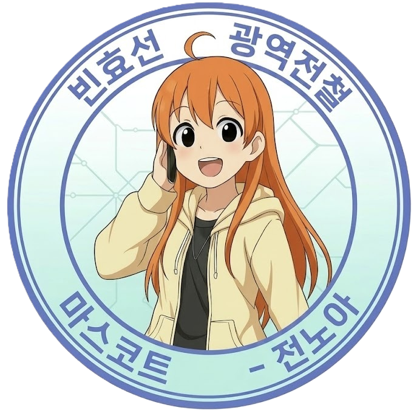

레일루미네 스마트 챗봇
원하시는 키워드나 질문을 자유롭게 입력해 주세요!

빈효선 전노아
환영합니다! 효빈교통공사 통합 스마트 챗봇입니다!
제 브리핑의 핵심은 세 가지입니다.
첫째, 빠르고! 둘째, 정확하고! 셋째, 친절하게!
무엇이든 유연하게 입력해 주세요! 제가 다른 담당자들을 호출해 드릴게요! (찡긋)
💰 운임/정기권
🧳 유실물 센터
♿ 편의시설
🛍️ 굿즈 스토어
🛠️ 시설 고장
전송